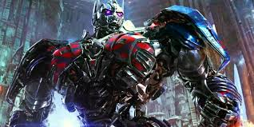

Optimus Prime é o último descendente da Dinastia dos Primes e sucessor de Sentinel Prime. Em Cybertron, ele era apenas um operário da equipe de Sentinel Prime até descobrir suas origens e se tornar o líder dos Autobots. Na Terra, se transforma em um Peterbilt 379 com pintura de chamas.